Lorsque l’on évoque la campagne de 1812 menée par l’empereur Napoléon Ier en Russie, les images qui viennent immédiatement à l’esprit sont celles du désastre : la boucherie de la Moskova-Borodino, l’incendie de Moscou et le long cortège des soldats transformés en clochards errant dans la steppe, poursuivis par les cosaques.
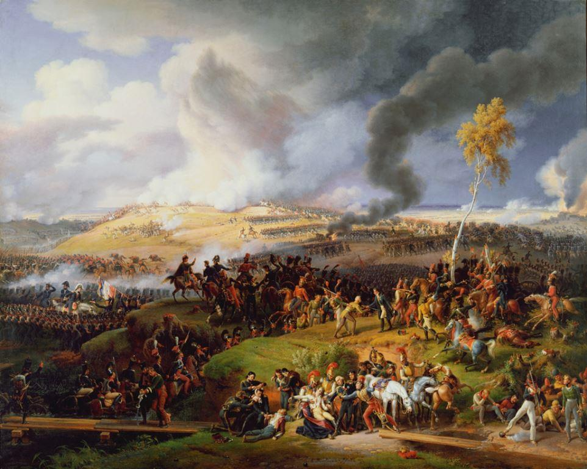
La bataille de la Moscova (Borodino), par Louis-François Lejeune
De là, on passe immédiatement aux épisodes suivants, les campagnes d’Allemagne et de France qui aboutirent à la défaite finale avec l’entrée des armées alliées dans Paris. Pourtant, pour 200 000 des 600 000 hommes qui composaient la Grande Armée lorsqu’elle passa le Niémen en direction de Moscou, les suites de l’aventure de 1812 ne se déroulèrent pas en Europe occidentale mais sur le territoire russe où ils étaient retenus comme prisonniers de guerre. La moitié seulement de ces soldats étaient français, les autres étant issus de régiments polonais, allemands, italiens et autres.
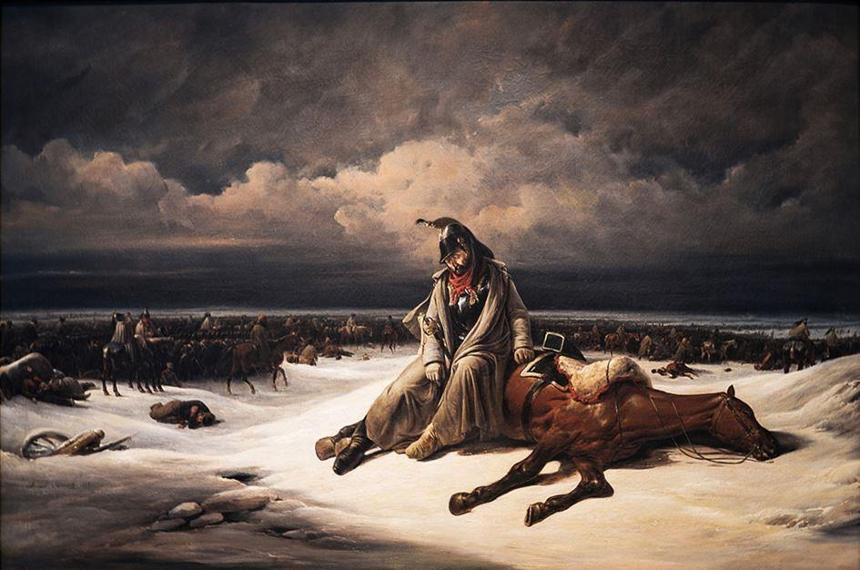
La retraite de Russie, par Bernard-Edouard Swebach
La plupart de ces prisonniers furent faits à l’issue de combats ou de batailles, tandis que d’autres, complètement épuisés, à moitié morts de faim et de froid, furent simplement « ramassés » par les unités russes durant la retraite. Ils constituèrent le gros du contingent des captifs dits « enregistrés » et envoyés dans des lieux de détention situés dans toute la Russie d’Europe, jusqu’à l’Oural.
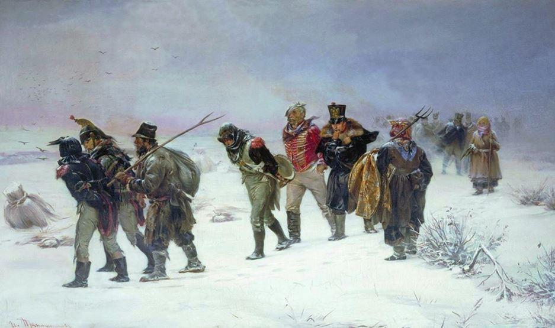D’autres avaient réussi à échapper à la capture mais, en loques, gelés et le ventre vide, ils avaient fini par frapper aux portes de maisons paysannes ou de domaines nobles ; quémandant le gîte et le couvert, acceptant tous les travaux en échange, ils entamaient les conversations avec leurs hôtes, qui n’y pipaient mot, par des « cher ami » : l’expression resta et, rapidement, elle devint un nom, « cheramijnik », pluriel « cheramijniki » (шерамыжник, шерамыжники), employé pour désigner ces soldats miséreux avant de devenir ensuite synonyme de gueux… Pour l’administration militaire russe, ces « cheramijniki » entraient dans la catégorie des prisonniers « non-enregistrés » ; elle comptait aussi un grand nombre d’hommes capturés par les cosaques qui, ne pouvant les envoyer à l’arrière faute de convois, les avaient donnés à la garde de paysans avec toute latitude pour les faire travailler gratuitement.
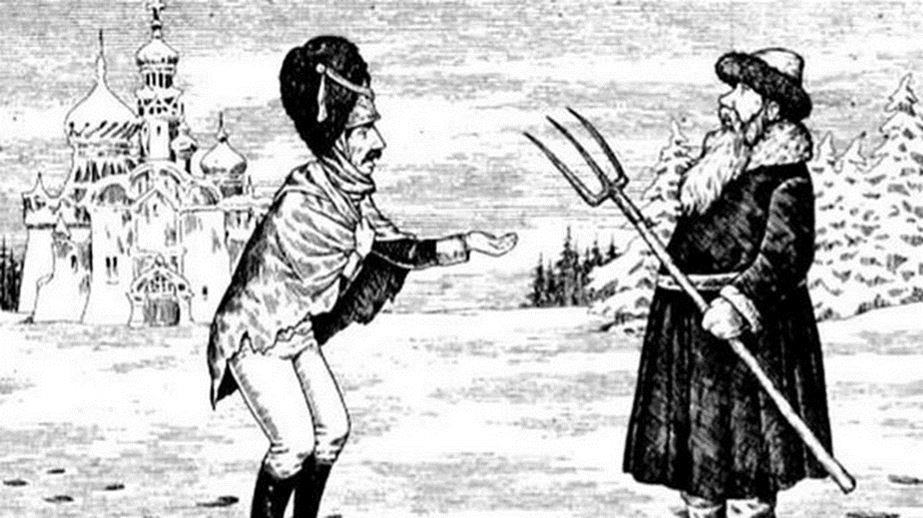
Un cheramijnik demandant à manger à un paysan russe
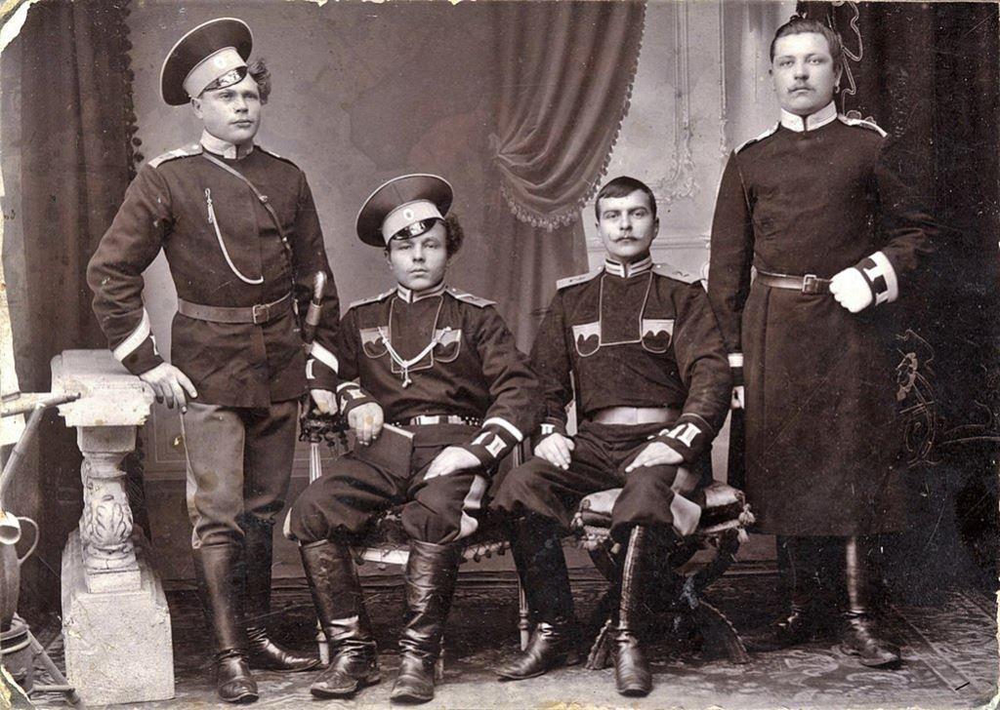
Cosaques d’Orenbourg en 1910
Très vite, les cosaques comprirent le bénéfice qu’ils pouvaient tirer de la situation : ils commencèrent à vendre leurs captifs, les hommes de troupe allant généralement à des paysans aisés, les officiers à des propriétaires terriens. Les familles nobles de rang modeste se jetèrent sur l’aubaine : depuis le XVIIIe siècle, la connaissance de la langue française était une condition sine qua none pour effectuer une belle carrière civile ou militaire ; or, l’engagement d’un précepteur, tout comme l’envoi de leurs enfants dans une grande école de Moscou ou de Saint-Pétersbourg, étaient totalement hors de leurs moyens. Par exemple, avant 1812, un tuteur français coûtait 1000 roubles par an… Et voilà que l’on pouvait acheter un Français taillable et corvéable à merci pour le prix d’un seul rouble ! Dans certaines provinces, il devint même rare de trouver une maison noble qui n’abritait pas « son » Français.
Généralement, ceux qui voulaient employer ces prisonniers comme pédagogues ne pouvaient évaluer leur niveau d’instruction et, de toute façon, ils ne s’en souciaient pas : il suffisait qu’ils soient français, c’était tout. Or, parmi ces précepteurs d’occasion se trouvèrent nombre de vétérans peu instruits qui n’avaient connu que les camps militaires depuis des années. C’était par exemple le cas du nommé Grosjean, un simple tambour qui n’avait pas le raffinement de ceux qui avaient fréquenté les grandes écoles ou les salons ; son éducation n’était que militaire, forgée par 20 ans de dures campagnes, et ses manières s’en ressentaient : il mangeait avec ses doigts, qu’il essuyait ensuite sur son pantalon, coupait la viande à la baïonnette et s’exprimait dans un argot mâtiné de mots allemands, polonais ou italiens, en ponctuant son discours de grossièretés à qui mieux-mieux… Capturé par des cosaques, il avait été vendu à des nobles de Moguilev, les Arnold, qui lui avaient confié l’éducation de leur jeune fils, Iouri. La mère de son élève avait bien sûr été horrifiée par sa « pédagogie », mais le jeune garçon avait gardé un souvenir impérissable et joyeux du vieux soldat : il lui avait appris à nager, à monter une tente, à allumer un feu, à jouer du tambour et lui avait raconté de fabuleuses histoires militaires. Ensuite cependant, envoyé dans une bonne pension moscovite, il avait dû travailler dur pour arriver à passer de l’argot de Grosjean au français littéraire.
On connait de nombreux cas similaires. Comme celui d’un certain Demoutier qui, à moitié mort de froid sur le champ de bataille de la Bérézina-Borisov, avait été secouru par un jeune lieutenant d’infanterie russe, Pouchkine. Celui-ci l’avait ramené chez lui, fait soigner, bien nourrir et loger dans une chambre particulière ; le prisonnier avait bientôt recouvré la santé et était devenu un ami inséparable de son ancien adversaire : les deux hommes s’étaient alors mis à faire la tournée du voisinage et à y faire la fête, sombrant dans d’énormes beuveries qui dégénéraient souvent en infernales bacchanales. La mère du lieutenant Pouchkine avait cru recueillir un Français qui, forcément éduqué, enseignerait la langue française et « toutes les sciences » à sa famille… Consternée par le tour pris par les événements, elle fit intervenir le commandant en chef de Saint-Pétersbourg, qui s’empressa d’envoyer le turbulent captif dans un camp de l’Oural.
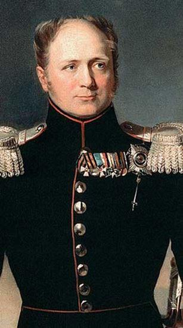 Le tsar Alexandre 1erDès 1813, le tsar s’intéressa aux dangers potentiels que représentaient les prisonniers de guerre. Alors que ses troupes se battaient encore à l’ouest, ces 200 000 hommes pouvaient non seulement constituer une force militaire conséquente sur ses arrières, mais aussi un germe de dissolution de la cohésion sociale : ces satanés Français imprégnés de l’esprit révolutionnaire « sans-culotte » ne risquaient-ils pas de répandre leurs idéaux chez les serfs et les inciter à la révolte ?
Le ministre du Commerce et de l’Industrie avait une autre vision des choses : la Russie manquait de main-d’œuvre, qualifiée notamment… Aussi pressa-t-il le souverain de proposer aux prisonniers de s’installer comme artisans, commerçant ou paysan, voire encore de tenir des emplois dans les manufactures ; en échange, pour s’assurer de leur loyauté, ils devaient prendre la citoyenneté russe, de manière temporaire ou définitive, et prêter serment de fidélité.
Pour les encourager dans cette démarche, on leur accorda de nombreux avantages, fiscaux notamment. À la mi-1814, ils étaient environ 60 000 à s’être laissés convaincre, mais la majorité avaient choisi la citoyenneté temporaire car ils ne désespéraient pas de rentrer un jour chez eux.
Au printemps 1814, la fin de la guerre changea la situation. La France exsangue, le nouveau gouvernement des Bourbons souhaitait le retour des prisonniers pour qu’ils reprennent le travail et participent à la remise en route de l’économie. Le tsar, dans un geste de réconciliation, accepta de favoriser et d’accélérer leur retour : les autorités locales reçurent ainsi des ordres pour leur fournir les transports et la nourriture nécessaires au voyage. Ce rapatriement n’était cependant pas facile à organiser, en premier lieu parce que nombre de prisonniers étaient éparpillés dans des endroits perdus de l’empire russe et ne savaient même pas que le conflit était terminé. Des annonces en français furent même publiées dans les journaux mais, finalement, peu nombreux furent ceux qu’elles touchèrent : en septembre 1814, le premier transport en partance de Riga et à destination du Havre ne comptait que 2000 hommes.
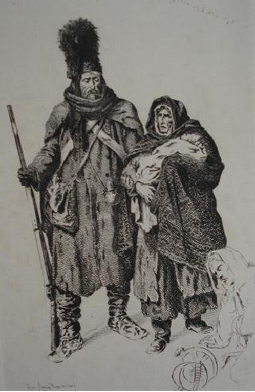Surtout, il fallait compter avec les vétérans déracinés qui, après vingt ans d’errances militaires, ne voulaient pas rentrer dans un pays où plus personne ne les attendait ; il y avait aussi ceux qui avaient fondé une famille dans les villages où ils s’étaient installés. Dans un de ses rapports, le gouverneur de Novgorod affirma même qu’il avait vu, dans les convois de prisonniers en route pour le rapatriement, des hommes qui demeuraient à la traîne dans l’espoir d’arriver à rester en Russie. Le tsar n’y était pas opposé : ces anciens soldats représentaient toujours un réservoir de main-d’œuvre dont son pays avait besoin et il ne voulait pas les forcer à partir. Il était cependant tenu par la promesse faite à la France de favoriser leur retour, aussi, tout en continuant à organiser leurs voyages vers l’Ouest, il leur permit d’opter pour la citoyenneté russe et de rester.
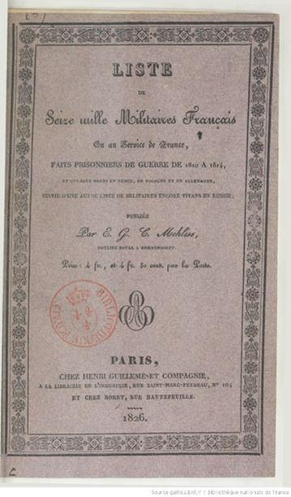Le gouvernement français continua à publier des annonces pour inciter les prisonniers à revenir jusqu’en 1816. La situation n’était alors pas aussi simple que l’on pourrait le croire, avec d’un côté ceux ayant opté pour le rapatriement, et de l’autre ceux qui avaient choisi de demeurer en Russie. Durant cette période, les aventures individuelles furent multiples, à l’échelle de l’immensité du pays et du nombre des captifs. Parmi elles, celle de six cheramijki qui, après avoir travaillé pour différents propriétaires dans la province de Vitebsk de l’automne 1812 à l’été suivant, avaient décidé de rentrer en France à pied.
Ils avaient marché jusqu’à Grodno, 450 kilomètres plus à l’ouest, où ils avaient fait étape pour travailler temporairement et refaire leurs provisions avant de reprendre la route.
Artisans qualifiés (maçon, charpentier, forgeron et serrurier), ils avaient été embauchés dans un grand domaine mais le maître de celui-ci, très satisfait de leurs services, avait décidé de ne pas les laisser repartir : entre promesses et menaces, il avait réussi à les retenir sur place pendant trois ans… Avant de les faire enregistrer comme serfs… Ayant difficilement réussi à faire parvenir des courriers à l’administration pour l’informer de leur situation, ils n’avaient finalement été libérés et autorisés à rentrer chez eux qu’en 1824 !
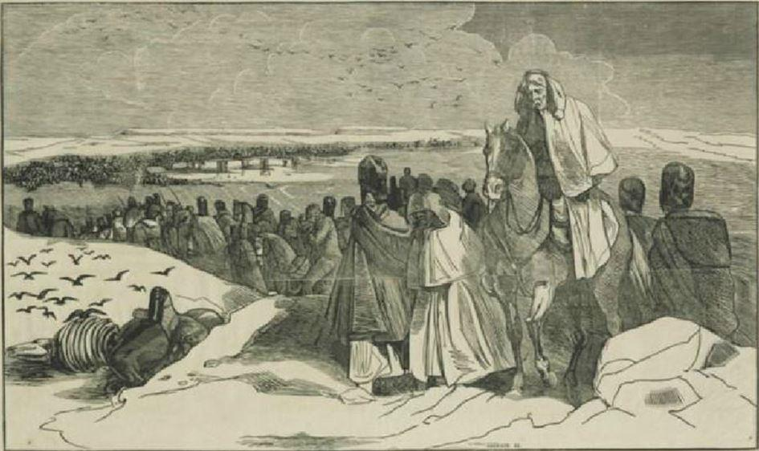La France en paix et sa société en recherche de quiétude bourgeoise après deux décennies de guerre ne pouvaient dégager le moindre attrait pour certains vétérans qui avaient, exaltés et glorieux, parcouru l’Europe entière derrière l’empereur Napoléon ; l’immensité russe, en revanche, représentait une poursuite de l’aventure séduisante pour les plus hardis, comme les dénommés Alexandre Vincent, Louis Albert et Piotr Kambe. En 1815, ces trois hommes vivaient à Iaroslav comme citoyens temporaires, ce qui montre qu’ils n’avaient pas dans l’idée de demeurer définitivement en Russie. Ils présentaient tous trois la particularité d’avoir été faits prisonniers pendant la marche en avant de la Grande Armée, au cœur de l’été 1812 : Alexandre Vincent était un sous-officier de 36 ans capturé en juillet dans une escarmouche d’avant-poste ; Louis Albert un caporal de 25 ans qui, servant au 20e Régiment de Chasseurs à Cheval, avait été pris durant la bataille de Polotsk, à la mi-août ; Piotr Kambe, enfin, était un Polonais du 5e Régiment de Chasseurs du corps polonais du prince Poniatowski, tombé aux mains des Russes durant la bataille de Smolensk, début août. Après leurs captures, ils avaient vécu des parcours différents, Louis Albert passant par exemple un an et demi à Vitebsk, puis ils avaient été transférés à Vladimir, où ils s’étaient rencontrés, avant d’être déplacés à Iaroslav.
Ils décidèrent courant 1815 de renoncer à rentrer chez eux et de s’installer définitivement en Russie. Quel fut le déclencheur de ce changement d’avis ? L’échec des Cent Jours ? On ne sait, mais toujours est-il que, le 27 janvier 1816, ils se présentèrent à l’administration en affirmant vouloir s’installer comme colons en Sibérie, demandant chacun l’attribution d’un domaine de paysan libre dans l’Altaï.
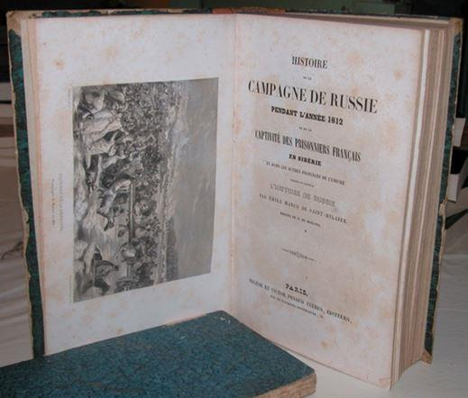Leur requête fut acceptée : on leur accorda un important pécule d’installation de 350 roubles et une exemption fiscale totale pour une durée de dix ans. Ils partirent alors pour un long périple de 3000 kilomètres, marchant de bourgade en bourgade via Tomsk, Barnaoul et enfin Byisk, au cœur de l’Altaï, où on leur indiqua leur lieu d’installation définitif, le village de Smolensky. Sans tarder, ils se mirent à l’œuvre, construisant leurs maisons et commençant à travailler leurs terres ; un rapport de mai 1817 indique même qu’ils s’étaient convertis à l’orthodoxie.
Ils se marièrent tous les trois avec des filles du cru mais, malgré cela, ils demandèrent en 1825 à regagner leur pays natal, peut-être travaillés par la nostalgie ou poussés par la dureté des conditions de vie sibériennes. Il est probable que l’autorisation fut donnée à Vincent et à Kambe, qui n’avaient pas encore d’enfants, mais elle fut refusée à Albert, qui en avait déjà trois âgés de 8 mois à 8 ans. Forcé de rester, il prit le parti de se fondre dans la population et se fit alors appeler Andreï Vassiliev ; l’administration n’oublia cependant pas son identité véritable mais, confondant son prénom et son nom, elle attribua le nom de Louis à son fils, Alexandre Andreïevitch Louis (Loui, Луи). Avec le temps, Loui est devenu Iloui (Илуй) et l’on trouve encore certains de leurs descendants dans la région de Smolensky, où leurs concitoyens les surnommaient toujours « les Français » jusqu’à une période récente.
Dès 1812, de nombreux prisonniers avaient été envoyés dans l’Oural, dans la province d’Orenbourg, sur les marches sud-orientales de l’empire russe. Le pays était aussi le lieu de stationnement de l’armée cosaque d’Orenbourg, chargée de la défense de cette zone frontière. Lorsque le choix fut laissé aux prisonniers d’opter pour la citoyenneté russe, temporaire ou définitive, certains de ceux qui choisirent la seconde purent être intégrés dans les rangs cosaques ; la chose est compréhensible, eut égard à leur expérience militaire. Ainsi Désiré d’Andeville, jeune officier qui devint d’abord professeur de français puis, en 1825, instructeur à l’école des cadets cosaques d’Orenbourg.
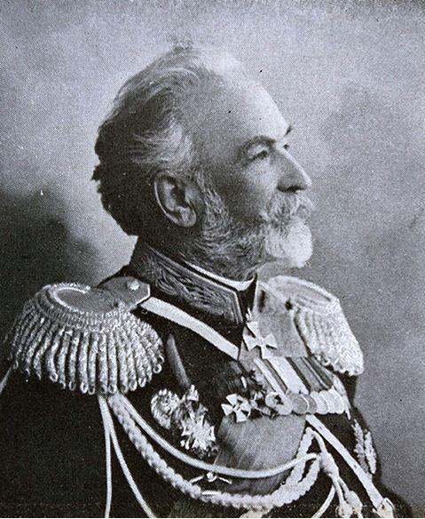 Le général Victor Desiderevitch Dandeville en 1902Classé noble, il se maria avec une femme russe de même condition et eut un fils, Victor Désidérévitch Dandeville, qui fit une belle carrière d’officier : atteignant le grade de général en 1863, il fut ministre des Finances du tsar de 1865 à 1867, puis chef d’état-major du district militaire du Turkestan jusqu’en 1871 ; après avoir participé à la guerre russo-turque (1877-1878), il commanda deux corps d’armée avant d’être intégré au conseil militaire du tsar ; il mourut à Saint-Pétersbourg le 8 octobre 1907.
On connait aussi les noms d’autres Français ayant intégré les rangs cosaques, avec par exemple Antoine Berg, Jacques-Joseph Boucher, Jean-Pierre Binelon, Edouard Langlois ou encore Jean Gendre. Il fils de ce dernier, Ivan, atteignit le grade de Sotnik, soit chef de centaine, l’équivalent de capitaine ; le nom Gendre, russifié, est devenu Gendrov. Quant à l’ancien officier Jean de Mack, devenu Ivan Ivanovitch Mack, il ouvrit une pension pour jeunes filles à Samara dans les années 1820 ; son fils Alexandre devint maire de Troïtsk (oblast de Tcheliabinsk) vers 1850, tandis que son petit-fils Boris fut plus tard conseiller à la cour.
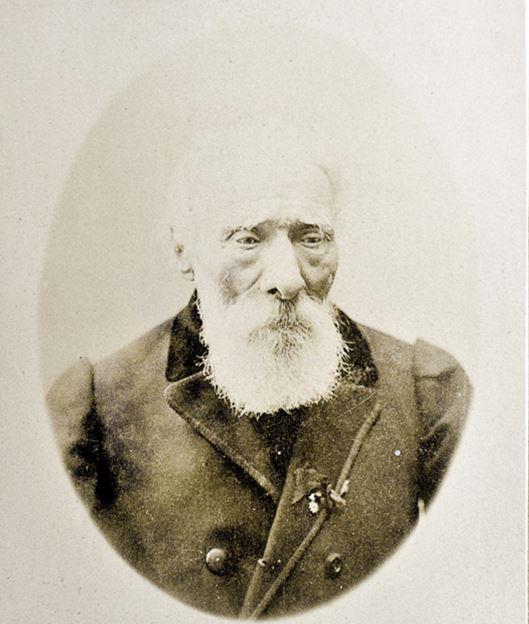Jean-Baptiste-Nicolas Savin ne fut pas cosaque, mais son cas mérite d’être cité car il est probable qu’il ne fut pas isolé. En effet, éloignés de la France à une époque où les communications étaient difficiles, les prisonniers pouvaient s’inventer des passés que personne en Russie ne pourrait jamais vérifier. C’est ainsi que Jean-Baptiste Savin créa sa légende : fils d’un membre des Gardes Françaises du roi Louis XVI, il avait fait de brillantes études d’art puis, incorporé dans l’armée, avait participé à toutes les campagnes depuis la libération de Toulon, en 1793, jusqu’à l’invasion de la Russie en 1812.
Alors lieutenant de hussards et chevalier de la Légion d’Honneur, il avait été chargé du convoi transportant l’or du Kremlin durant la retraite ; lors du passage de la Bérézina, le pont avait cédé sous le poids des chariots et Savin, resté sur la rive russe, avait été fait prisonnier. D’abord été interné à Iaroslav, il avait été envoyé à Saratov où, pour subsister, il avait donné des leçons d’escrime aux officiers de la garnison ; il était ensuite devenu professeur de français au lycée de la ville, établissement réservé aux jeunes nobles et fils de dignitaires. Dans les années 1880, son histoire avait provoqué un énorme engouement tant en France qu’en Russie et, à sa mort à l’âge de 126 ans survenue en 1894, il avait eu droit à des obsèques grandioses, dignes « du plus vieux grognard de Napoléon » qu’il prétendait être.
Mais un historien de Saratov, Victor Totfalushin, et un écrivain français, Yves Gauthier, se sont récemment penchés sur les incohérences des récits de Savin… Et ils ont découvert qu’en fait l’homme se prénommait Pierre-Félix et était né en 1792 ; ébéniste de profession, il s’était engagé en 1811 puis, devenu sous-officier au 24e Régiment d’Infanterie Légère, avait probablement été capturé durant l’été 1812. Interné à Kvalynsk, dans la province de Saratov, il avait pris la citoyenneté russe en 1813 et s’était marié trois ans plus tard avec une fille de commerçant dont il avait eu quatre enfants.
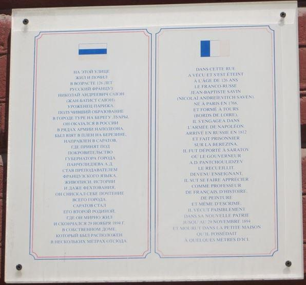 Plaque posée à Saratov dans la rue où vécut J.B.N. Savin et reprenant sa légendeEn 1834, il avait demandé à rentrer en France mais, père de famille, cela lui avait été refusé. Ce n’est qu’ensuite qu’il s’était installé à Saratov, où il avait vécu modestement en donnant des cours de français jusqu’à ce que sa légende commence à se diffuser. Ni officier, ni hussard, ni chevalier de la Légion d’Honneur, il n’était donc pas mort à 126 ans, mais à 104, ce qui était déjà fort respectable pour l’époque.
On pourrait ainsi continuer indéfiniment : les historiens estiment qu’environ 60 000 prisonniers de la Grande Armée sont restés en Russie après la fin de la guerre. En 1836 par exemple, ils étaient encore plus de 2500 à habiter à Moscou, tandis qu’au début du XXe siècle, l’armée des cosaques d’Orenbourg comptait toujours 200 descendants officiels de soldats français.
Que reste-t-il de cet héritage français en Russie ? Tout d’abord quelques noms de famille, comme les Gendrov et les Iloui, cités supra, ou les Boucheniev (de Boucher), ainsi que des traces dans la toponymie, avec par exemple ce « Moulin des Français » dans les environs de Samara. Ensuite et surtout, de l’intérêt, car un simple tour sur le réseau social Vkontakte permet de voir que nombreux sont les Russes qui s’interrogent sur la consonance et l’origine française de leur nom ; des historiens ne sont pas en reste et, à l’instar de Victor Petrovitch Totfalushin ou de Vladen Georgevitch Sirotkin, fouillent inlassablement l’immensité des archives russes pour y retrouver trace de ces soldats perdus.
N.S.
BIBLIOGRAPHIE INDICATIVE
Сироткин В.Г., « Судьба пленных солдат и офицеров Великой Армии в России после Бородинского сражения », dans Материалы VIII Всероссийской научной конференции (Бородино, 6-7 сентября 1999 г.). Можайск, Терра, 2000.
Gauthier (Y.), Souvenez-vous du gelé, un grognard prisonnier des Russes, Transboréal, 2017.
Магерамов (А. А.), Военнопленные "Великой армии" на службе в Сибирском линейном казачьем войске, sur le site web www. artofwar.ru
Тотфалушин (В.П.), « Савен Ж.Б.Н. » dans Отечественная война 1812 года и освободительный поход русской армии 1813–1814 годов, 2012. Et différentes autres publications du même auteur.
La page VK du Восточный Бонапартистский Комитет (Comité Bonapartiste Oriental) disponible à l’adresse https://vk.com/club3876800 et en particulier les publications de Nikita Redko sur le fil https://vk.com/topic-3876800_6486063?offset=20
Partager cette page